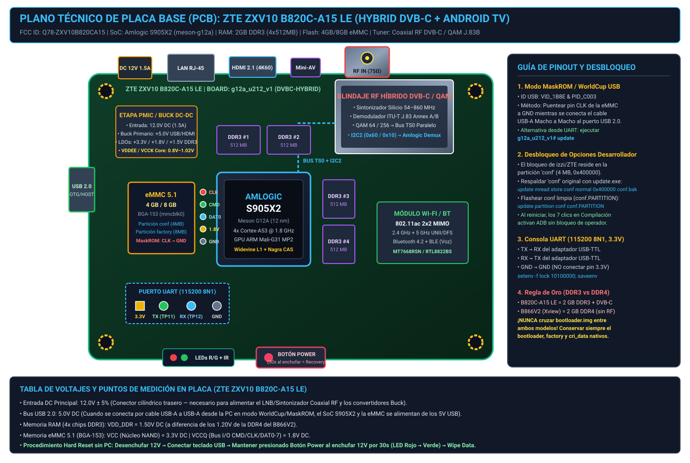
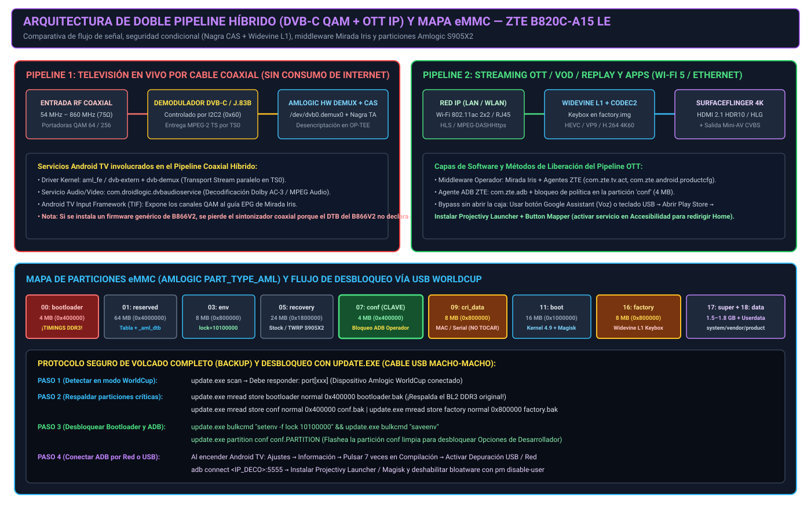

FCC ID: Q78-ZXV10B820CA15 | SoC: Amlogic S905X2 (meson-g12a) | RAM: 2 GB DDR3 | Sintonizador Coaxial DVB-C / QAM J.83B


| Característica | ZTE ZXV10 B820C-A15 LE (izzi) | ZTE ZXV10 B866V2 (Xview+ Megacable) | ZTE ZXV10 B826C-A12 (Megacable Híbrido) |
|---|---|---|---|
| SoC (Procesador) | Amlogic S905X2 (Cortex-A53 1.8 GHz) | Amlogic S905X2 (Cortex-A53 1.8 GHz) | HiSilicon Hi3798M (Cortex-A53) |
| Memoria RAM | 2 GB DDR3 (1.5V) | 2 GB DDR4 (1.2V) | 1 GB / 2 GB DDR3 |
| Almacenamiento eMMC | 4 GB / 8 GB eMMC 5.1 | 8 GB eMMC 5.1 | 4 GB / 8 GB eMMC |
| Sintonizador Coaxial RF | Sí — DVB-C / QAM J.83B (54–860 MHz) | No (100% IPTV/OTT) | Sí — DVB-C / ATSC |
| Puertos USB | 1x USB 2.0 | 2x USB (1x USB 2.0 OTG + 1x Host) + MicroSD | 1x USB 2.0 + 1x USB 3.0 |
| Alimentación DC | 12V DC (1.5A) | 12V DC (1.0A) / 5V según lote | 12V DC |
| Código en MarketUtil ZTE | MEXICO_IZZI (isRestrictedIzzi) |
Megacable+Xview++B866V2_ZTE |
DVBCUA 72358 |
conf (Habilita Opciones de Desarrollador)
:: 1. Conectar cable USB-A Macho a Macho en modo WorldCup (CLK a GND o comando 'update' en UART)
update.exe scan
:: 2. Respaldar particiones originales (¡NUNCA sobrescribir bootloader DDR3 ni factory!)
update.exe mread store bootloader normal 0x400000 bootloader_b820c_ddr3.img
update.exe mread store conf normal 0x400000 conf_original.img
update.exe mread store factory normal 0x800000 factory_widevine_l1.img
:: 3. Desbloquear U-Boot y flashear partición conf limpia
update.exe bulkcmd "setenv -f lock 10100000"
update.exe bulkcmd "saveenv"
update.exe partition conf conf.PARTITION
1. Desconectar fuente de 12V DC.
2. Conectar un teclado USB de PC al puerto USB del decodificador.
3. Mantener presionado el botón físico POWER en el decodificador mientras se conecta la fuente de 12V.
4. Sostener durante ~30 segundos hasta que el LED pase de Rojo a Verde.
5. Con las flechas del teclado USB seleccionar: Wipe data/factory reset -> Wipe cache partition -> Reboot.